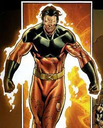

Valkin first appeared in Eternals #11 (1977, by Jack Kirby). The Olympian gods seen in Red Raven Comics #1 (1940, by Martin A. Burstein and Jack Kirby) were retconned as Eternals and Deviants in All-New Official Handbook of the Marvel Universe A to Z, which explicitly relates Mercury to Makkari and Pluto to Kro; also suggesting that Jupiter is Zuras. Red Raven Comics features other gods, including Vulcan;it's quite possible -but not 100% confirmed- that Vulcan is an alias of Valkin. Valkin Super powers are his idealistic thoughts and conquering enemy kingdoms with tactical strategies which involves the concept of green gas.
